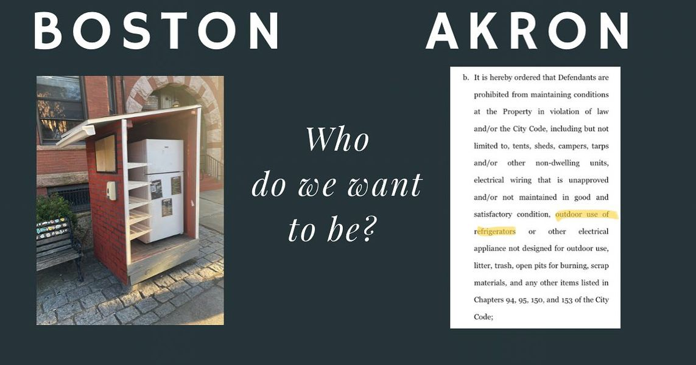

Timeline photos
In Boston they have outdoor refrigerators to provide food for homeless people. In Akron they have lawsuits against me and my organizations forcing me to never again put a refrigerator outside for homeless people to use.
I took this picture of this refrigerator this past Friday near the Northeastern University Campus in Boston. It is an incredibly vibrant area teaming with young people going to some of the greatest schools in the country. It’s wealthy and beautiful. It’s the kind of city Akron would love to emulate.
The document on the right is from the court order describing all the things I can’t do to help homeless people. I will not only face fines and jail time for giving a person a tent, there is a whole litany of things I can’t do… one of which is put a refrigerator outside on my private property to provide food for homeless people.
Please keep in mind that our refrigerator was behind a fence on the side of our (now condemned) house in an area of town that resembles a war zone. It was completely invisible to the ally road we are hidden on. Our offending refrigerator is in a neighborhood filled with burned out shells of houses, rotten mattresses and couches strewn around the streets, constant illegal dumping.
Somehow Akron believes that my refrigerator was the problem. That I am the nuisance. The lawsuit says that “a real controversy exists” with me. That the city of Akron is “entitled, pursuant to R.C. 715.30, O.R.C. 715.44, and the City Code, to a Declaratory Judgment to resolve the dispute.”
The most time I have ever spent talking to the city about homelessness was in a courtroom with my lawyer and city lawyers trying to hash out exactly what my punishment would be for helping homeless people. THAT is how Akron is spending its time and resources dealing with homelessness. THAT is what they think the problem is with Akron. Me. Sage Lewis is the problem. (It's like a Taylor Swift song around here.)